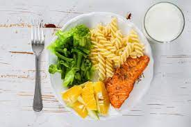
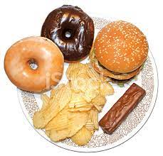

Healthy and Unhealthy food
-
Healthy food Importance
A healthy diet is essential for good health and nutrition. It protects you against many chronic noncommunicable diseases, such as heart disease, diabetes and cancer. Eating a variety of foods and consuming less salt, sugars and saturated and industrially-produced trans-fats, are essential for healthy diet.
-
Effects of Unhealthy food
Any food that has no or negligible nutritional value can be considered as junk foods. Most of the fast foods, including candy, bakery products, burgers and sausages, salty and oily snacks or soft drinks can be categorized as junk food. They have a high calorie content, salts and fats. The more we consume these, the less is the intake of essential nutrients and vitamins in the body.